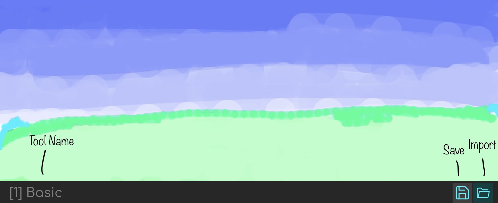

Paint is an amazing Painting Application created using SCRATCH. You can find the project here.
Paint is divided into three main parts: Toolbar, Taskbar and the Canvas where you draw.
The Tool Bar is the place where you select the Tool, adjust Colours and tool Size.
The Task Bar is the place which shows the Tool you are using and has Save and Import options.
The Canvas is the place where you draw
Paint offers you 7 amazing tools: Basic Brush, Smooth Brush, Spray, MultiColour, Laser, Eraser and Delete All.
The Basic Brush is a normal brush which you use to draw.